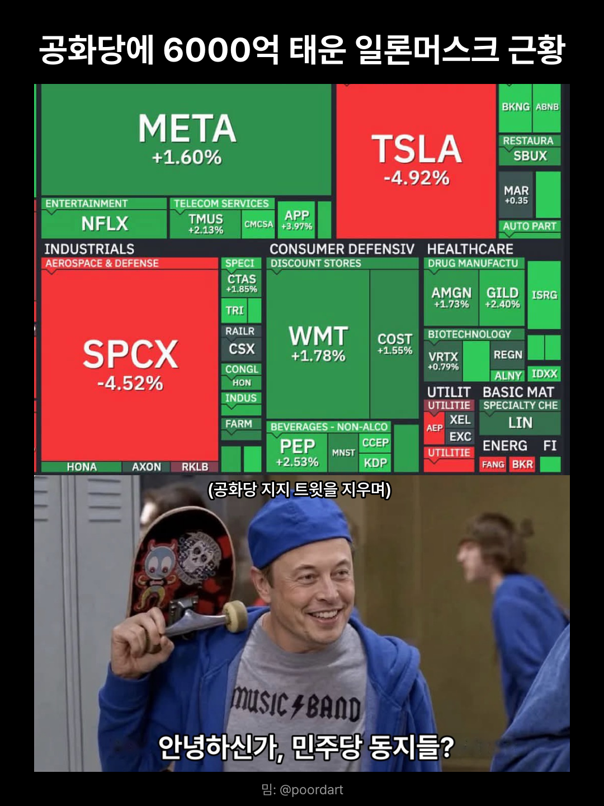

공화당에 6000억 태운 일론머스크 근황
댓글
부유세 5% 뜯길예정....
팩트: 국장 삼전닉스가 더 떨어졌다
공화당 지지했나봐
대체 무슨 목적으로 쓴 댓글일까 어쩌라는거야...
물려서 난폭해진 투자자의 모습이다
테슬라 스엑에 물리면 더 떨어진 국장을 난폭하게 조롱하며 위안을 얻는 것이군
물린 사람 아니고서야
이렇게 반응할 이유가 전혀 없는데
ㄹㅇ 머스크랑 중간선거 테슬라 스엑 얘기하고 있는데 여기 물린거 아니면 갑자기 삼하 떨어진걸로 반응할 이유가 없지
눈치는 줫도없노 그걸 누가 모르나?
테슬라 줍줍 기회임
그래서?
반도체랑 데센 더 나락가는디 1주석은 양반이지

민주당에8000억태우면됨 ㄱㅊ
팩트) 일론은 테슬라 지분 20프로밖에 안가지고 있다
그거 때문에 스엑이랑 합병해서 지 발언권 늘릴려고 각 보는 중
참고로 엔비디아도 공화당에 배팅함....ㅋ....ㅋ....ㅋ...
내 주식....
ㅜㅠ
미래에는 저축 안해도 된다며 스스로 돈삭제하면서 보여주네
엔비디아도 구글도 산 나는 횡보했다고 한다..
일론 갑자기 난 이민자다 .시전 하면 졸라 웃기긴 하겠다. ㅋㅋ